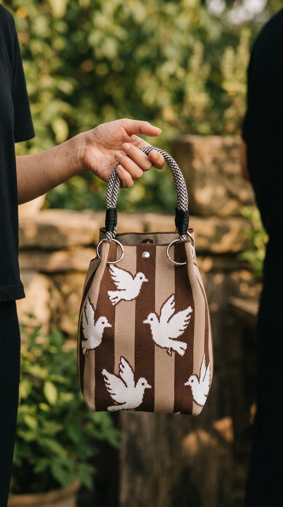
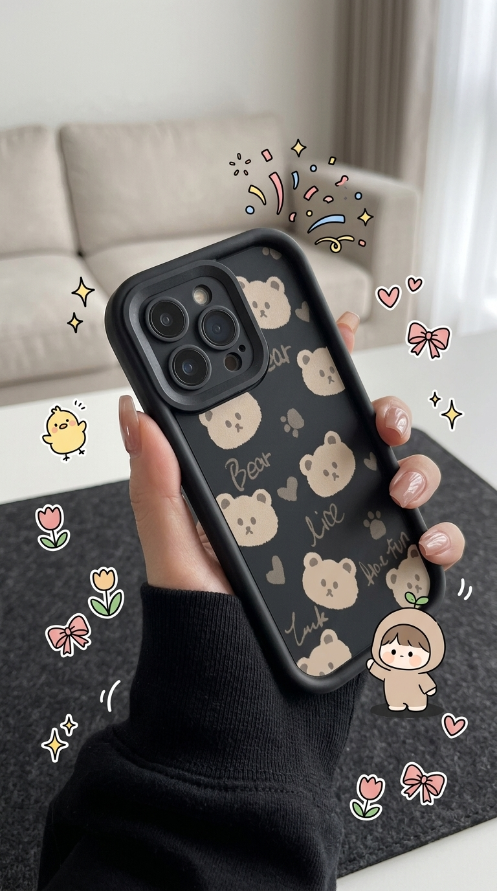
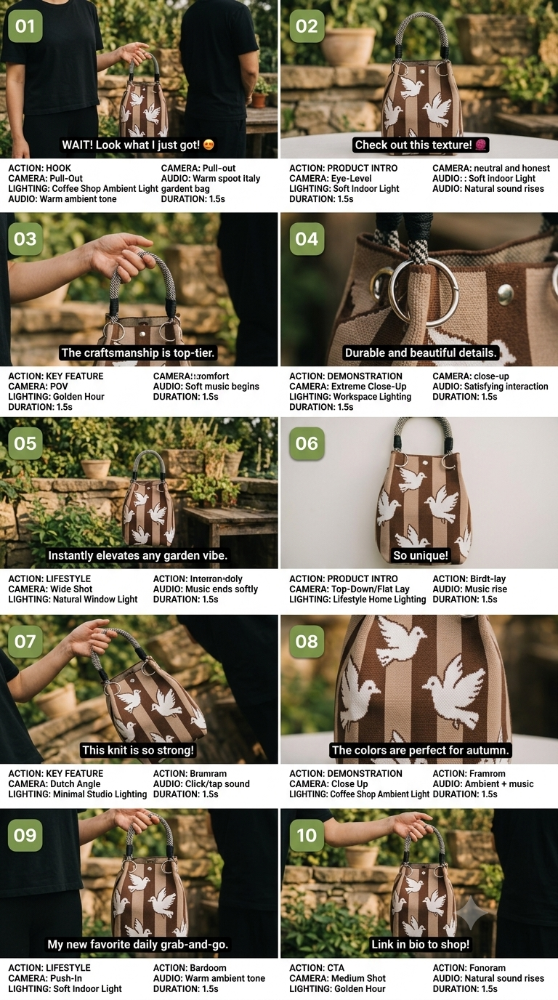

Close-up shot framing the entire product tightly, removing environmental distractions to force complete focus on the item. A woman's hand, wearing a soft black casual everyday top, fingers wrapped naturally around the product while holding "GlowSerum", visible natural skin texture on the hand, appearing to be in their early twenties. In a cozy bedroom with bedding visible in the background, cozy and warm atmosphere with soft golden tones. Shot on a smartphone camera, realistic phone photography look with slight natural grain, vertical mobile-first photo composition, aesthetic and eye-catching, casual lifestyle product photography, candid, aspect ratio 9:16.
Settings Sama, Hasil Tak Pernah Sama.
CANDID jana prompt AI siap-copy untuk gambar & video produk POV — pilih platform, angle, mood & puluhan kombinasi lain, terus paste ke Midjourney, Nano Banana, Kling, Runway & lain-lain.
Apa CANDID Boleh Buat
Satu tool, semua tetapan yang creator/affiliate perlukan untuk content produk yang nampak natural — bukan template.
Platform & Saiz Auto-Set
Pilih TikTok, IG Reels/Feed, Facebook, Shopee/Lazada atau YouTube Shorts — saiz & gaya prompt auto sesuaikan ikut platform.
Cadangan Scene Pintar
Terangkan produk, biar sistem auto-cadangkan scene ikut kategori produk — atau tulis idea scene sendiri.
Naratif & Berstruktur
Prompt ayat biasa untuk kebanyakan tool, atau format
[LABEL] untuk AI image-edit yang kekalkan produk
100% sama macam rujukan.
Mod Video
Prompt video standalone dengan camera movement yang auto terbahagi ikut durasi — sampai 60 saat.
Storyboard Multi-Scene
Grid ringkas, shot list penuh, sheet storyboard, studio sosial media, atau format UGC Hook→CTA — sampai 20 panel.
Estetik Kawaii & Doodle
Pastel, sticker, prop comel — untuk brand yang nak vibe manja & playful.
Riwayat Tersimpan
Semua prompt disimpan lokal dalam browser — senang nak regenerate atau copy semula bila-bila masa.
Tak Pernah Sama
Settings sama pun, setiap generate random-kan lighting, pose & detail scene — batch prompt tak nampak template.
Macam Mana Ia Berfungsi
Pilih Platform & Saiz
TikTok, IG, Shopee/Lazada dan lain-lain — saiz auto-set.
Terangkan Produk
Jenis barang, nama brand, deskripsi ringkas — atau scene sendiri.
Fine-Tune Visual
POV, angle, model, outfit, lokasi, mood — semua boleh custom.
Generate & Copy
Klik Jana Prompt, copy terus, paste ke AI generator pilihan anda.
Contoh Cara Penggunaan CANDID
CANDID cuma titik permulaan. Ni contoh flow penuh — dari prompt, sampai jadi video produk yang siap nak post.
-
1
Generate Prompt Untuk Gambar
Guna CANDID untuk jana prompt gambar produk POV ikut platform, angle & mood yang anda pilih.
-
2
Generate Gambar Banyak-Banyak
Paste prompt tu ke AI photo editor pilihan anda (cth: Nano Banana/Gemini) dan hasilkan banyak variasi gambar produk.
-
3
Generate Prompt Untuk Storyboard
Balik ke CANDID, jana prompt storyboard berdasarkan produk & gambar yang dah dihasilkan tadi.
-
4
Generate Storyboard Kat Gemini
Paste prompt storyboard tu ke Gemini untuk hasilkan storyboard sheet/panel yang lengkap.
-
5
Create Video Realistic Berdasarkan Storyboard
Guna storyboard tu sebagai rujukan untuk hasilkan video produk yang realistic (cth: Kling, Seedance, Runway).
Lihat Sendiri
Contoh prompt yang CANDID jana, dan hasil sebenar dari pengguna yang guna prompt tu dalam AI generator pilihan mereka.
📝 Contoh Prompt Yang Dijana
[SHOT TYPE]: Close-up product shot
[SUBJECT]: "GlowSerum" bottle placed upright on a marble
surface
[ACTION]: Product resting naturally, soft shadow beneath
it, label facing camera
[STYLE]: Clean e-commerce listing photo style, clear
product visibility
[BACKGROUND]: Neutral studio backdrop, soft even lighting
[PRODUCT]: Keep bottle shape, color and label 100%
identical to the reference image
📸 Hasil Sebenar Dari Pengguna
Gambar sebenar yang dijana guna prompt dari CANDID.

media/result-1.png

media/result-2.jpg

media/result-3.png

media/result-4.png